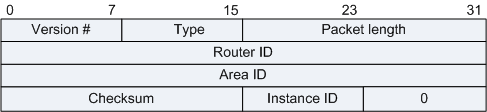

OSPFv3用IPv6报文直接封装协议报文，协议号为89，在IPv6 Next Header里标识。OSPFv3分为5种报文：Hello报文、DD报文、LSR报文、LSU报文和LSAck报文。
OSPFv3这五种报文具有相同的报文头格式，长度为24字节。

| 字段 | 长度 | 含义 |
|---|---|---|
| Version | 1字节 | 版本，OSPF的版本号。对于OSPFv3来说，其值为3。 |
| Type | 1字节 | 类型，OSPFv3报文的类型，有下面几种类型：
|
| Packet length | 2字节 | OSPFv3报文的总长度，包括报文头在内，单位为字节。 |
| Router ID | 4字节 | 始发此包的路由器的Router ID。 |
| Area ID | 4字节 | 发送该报文的所属区域。 |
| Checksum | 2字节 | 使用IPv6标准16位校验和。校验内容包括前导的IPv6伪头和OSPF协议包头。伪头中的Upper-Layer Packet Length字段值等于OSPF包头中的Packet length字段值。如果包长度不是16位的整数倍，则用0填充后进行计算。计算校验和时校验和字段本身设置为0。 |
| Instance ID | 1字节 | 缺省值为0。允许在一个链路上运行多个OSPFv3的实例。每个实例应该具有唯一的Instance ID。Instance ID只在本地链路上有意义。如果接收到的OSPF包的Instance ID和本接口的Instance ID不同，则丢弃这个包。 |
| 0 | 1字节 | 保留字段，必须填0。 |
| 标准 | 描述 |
|---|---|
| RFC 2740 | OSPF for IPv6 |